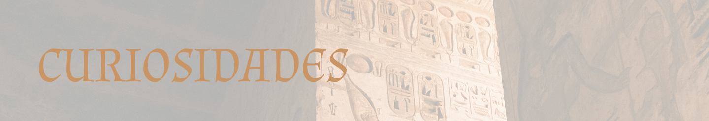
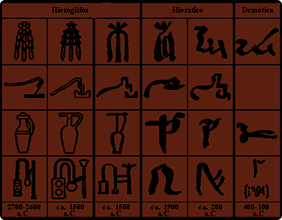
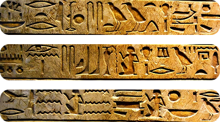
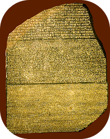

-

Formas de escrita
Você sabia que não havia apenas uma forma de escrita dos hieróglifos? Nessa época, havia três formas de escrita:
Hieróglifos: A mais conhecida, mais formal, com desenhos detalhados, usada para monumentos, templos e para cunho religioso.
Hierática: Uma versão um pouco simplificada, mas que ainda era usada para coisas formais, os Escribas a usavam para escrever documentos de contabilidade, administração, para literatura e correspondência.
Demótica: A escrita usada pelo povo, onde era mais prática, com mais abreviações, usada para registros do dia a dia, para comércio, contratos legais etc. -

Mensagens escondidas nas gravuras
Nos desenhos hieróglifos, se pode reparar que muitos deles parecem ‘sem sentido’, ou com desenhos surrealistas: humanos maiores do que outros, criaturas e objetos estranhos, etc. Mas tudo isso tem um porquê, afinal as escritas eram usadas para transmitir ideologias: quanto maior era a pessoa, mais poder e relevância se tinha, se era simbolizada como uma criatura estranha e horrenda, poderia ser uma entidade considerada maligna para o povo, e isso com todas as escritas da época.
-
O poder mágico
Além dessa escrita ser extremamente complexa e cheia de mistérios, as pessoas do Egito acreditavam que os hieróglifos tinham poder mágico, onde escrever nomes, gravar pessoas, animais e orações dariam forças mágicas para aquilo que era gravado. Tanto que muitos faraós mandavam apagar nomes gravados de outros poderosos, porque se acreditava que traria azar para aquele apagado, e não permitiria que aquela alma pudesse ter uma plena vida após a morte.
-

As paredes de feitiços
Dentro de algumas pirâmides existem milhares de hieróglifos conhecidos como Textos das Pirâmides. Eles eram considerados fórmulas mágicas para proteger o faraó após sua morte.
-

A direção de leitura
Nas escritas e textos, as frases podem ser escritas de cima pra baixo, de baixo pra cima, da esquerda para a direita, e por aí vai, agora, como se sabia onde se deveria começar a ler o texto? Uma das formas é reparar para onde os animais e as pessoas estão olhando no texto, esses desenhos sempre olham para o começo das frases.
-

A pedra da roseta
Você já ouviu falar da pedra da Roseta? Ela é uma das descobertas mais importantes da história, contendo nela, um texto em hieróglifos, traduzido para o demótico e para o Grego. Sem ela, os historiadores provavelmente não teriam conseguido decifrar os hieróglifos, pois foi a tradução do grego que permitiu que a descoberta fosse feita.